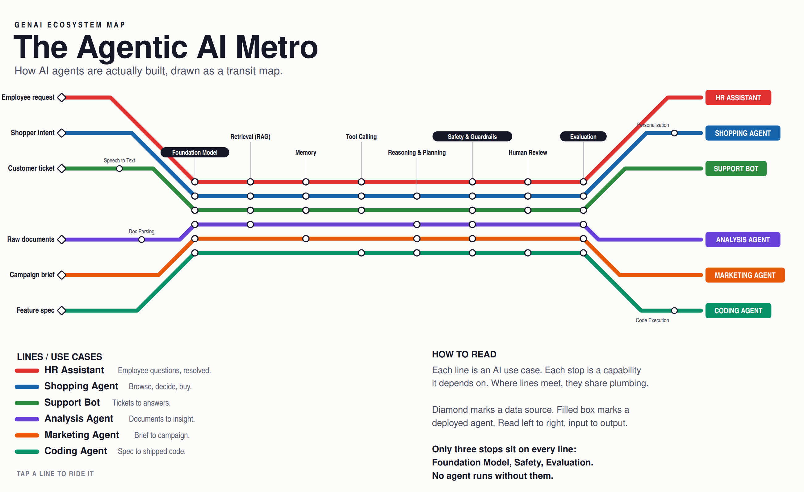
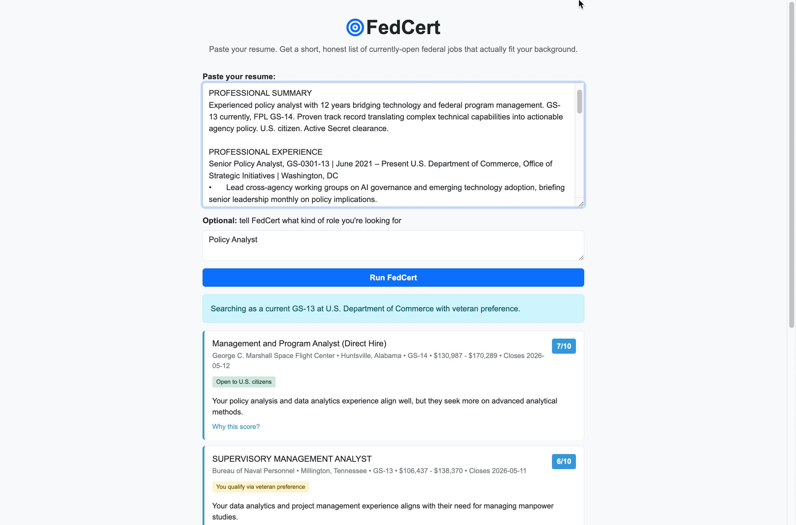
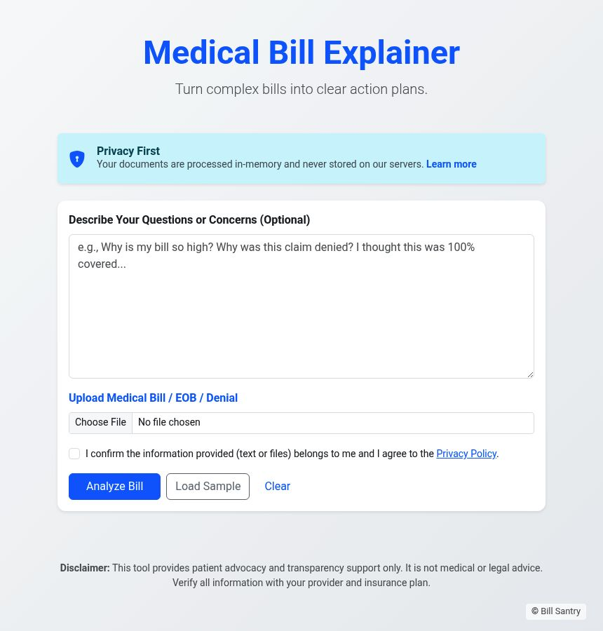
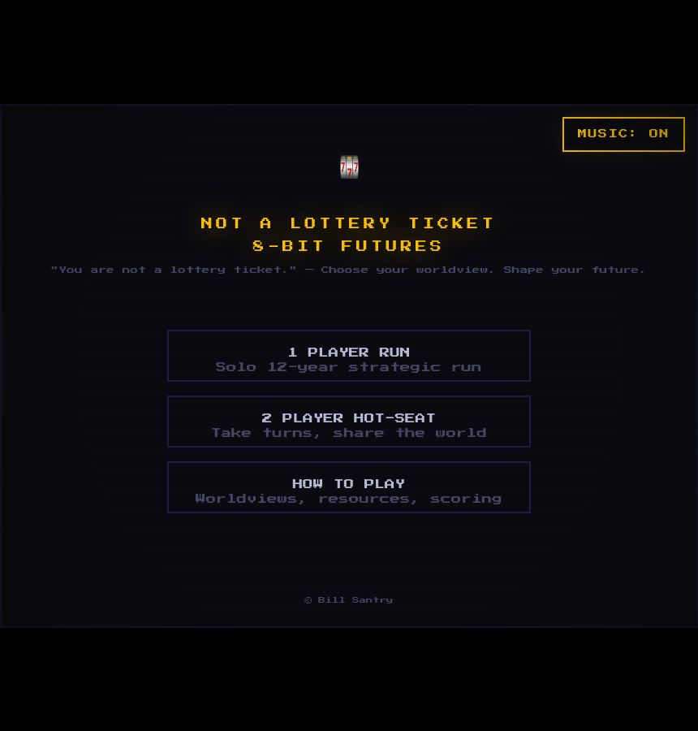
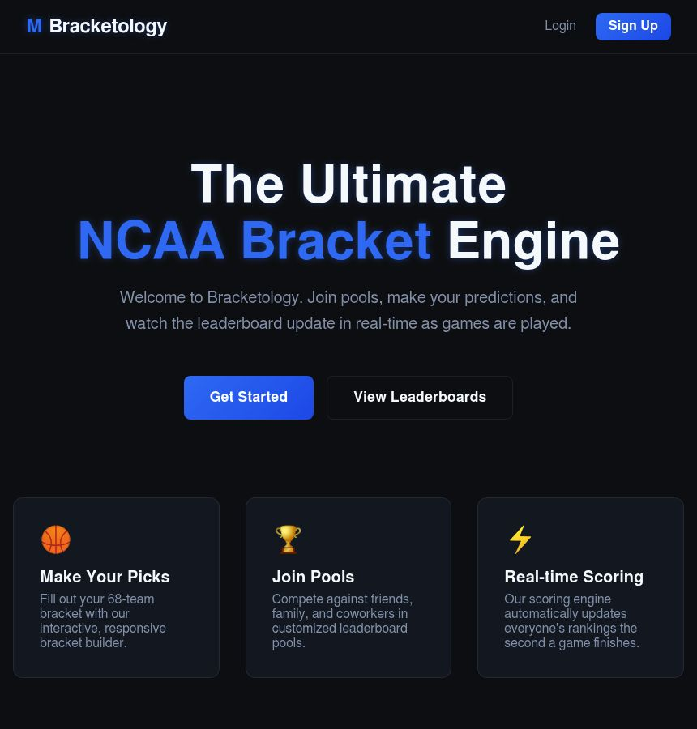
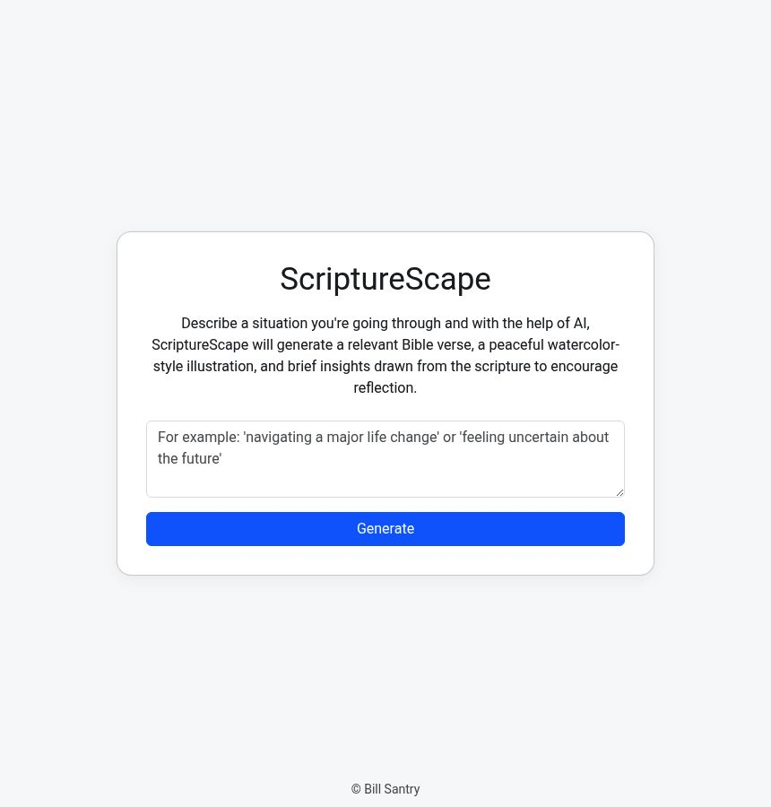
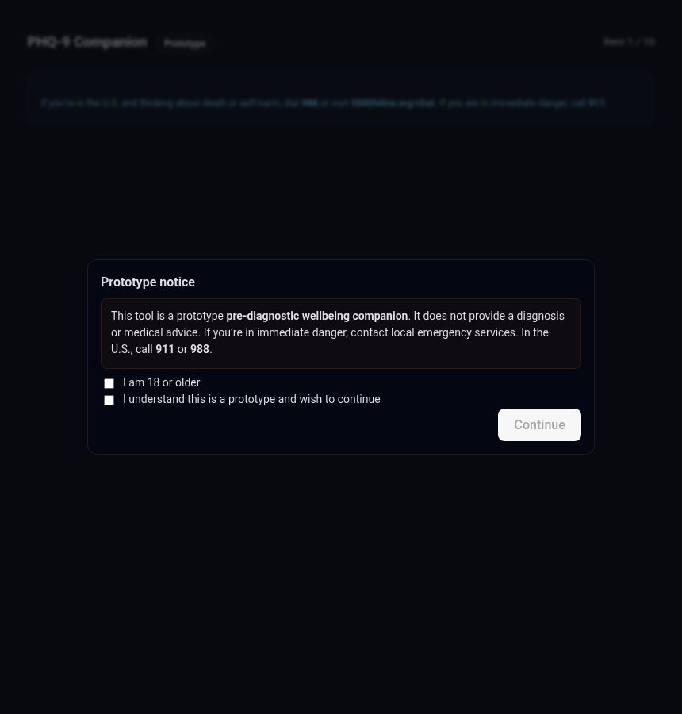
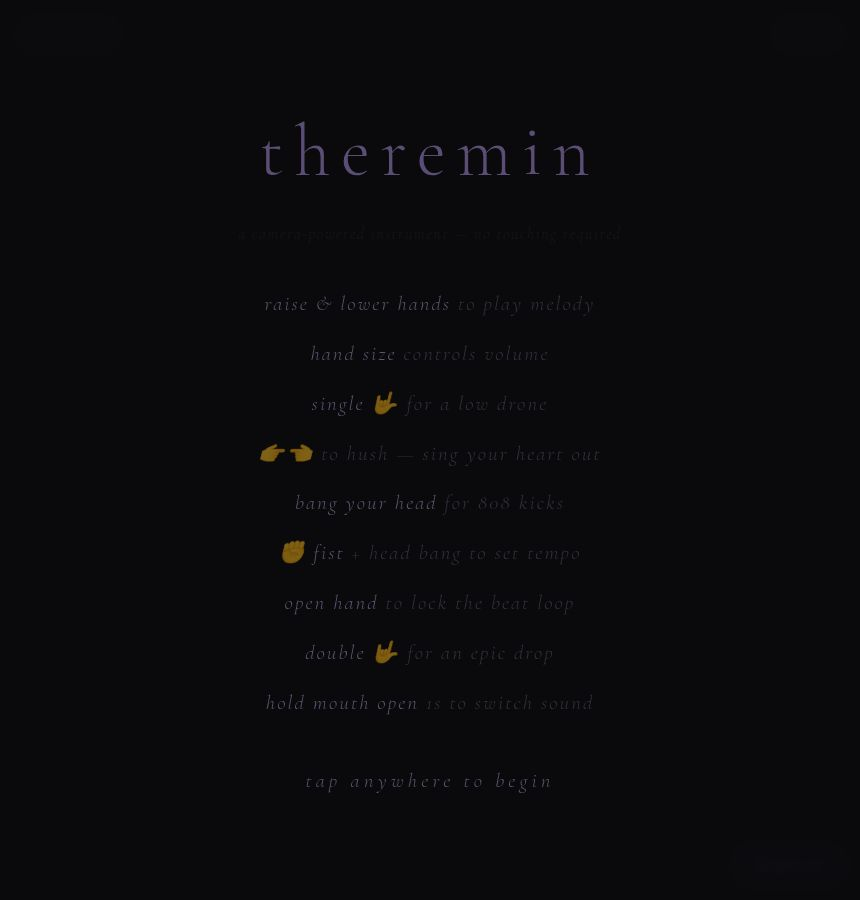
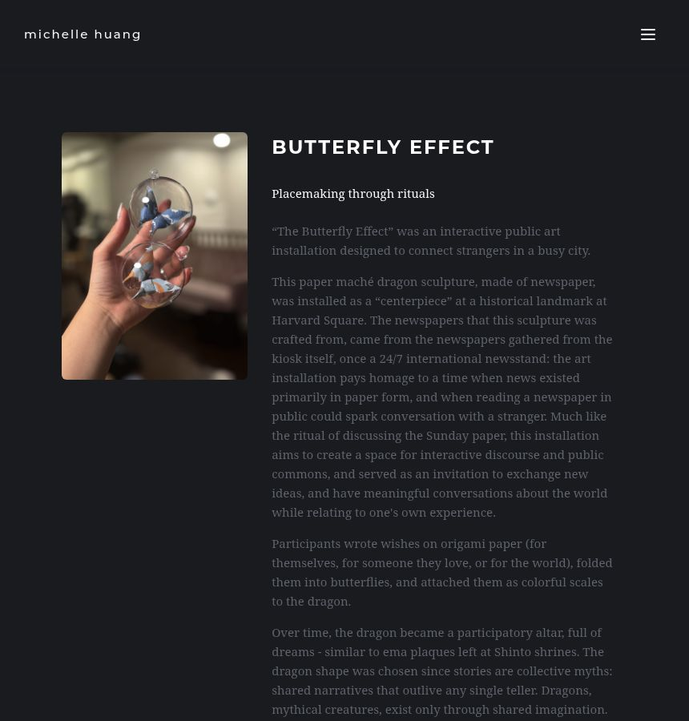

Bill Santry
AI is rewriting the terms of being human faster than anyone can theorize about it. So instead of philosophizing, I like to make things and see what I can learn from them. Experiments in self-understanding, in decoding systems, in finding inspiration, in play. My recent work explores one question more than any other: how can AI help us get in touch with what it is to be human?
Experiments
Every Enneagram test is the same wall of checkboxes, scoring your behavior to guess at your type. But the system was never really about behavior. It is about motivation, the why underneath the what. So what if the test were a conversation instead, one that asked about what drives you and listened to how you answered?
An adaptive interview turns out to fit the problem far better than a fixed questionnaire. The guide holds a hypothesis across all nine types and asks each question to resolve its own uncertainty, the way a thoughtful person would. The harder surprise was restraint: teaching it to stay contemplative rather than clinical, to never invent a quote, and to point you toward a real person when a tool has reached its limit.
Begin
Every week brings a new “AI agent” wrapped in its own vocabulary - RAG, MCP, orchestration, guardrails - and each one sounds like a separate breakthrough. It isn’t. Strip the jargon and the same handful of capabilities keep reappearing, just wired together in a different order. That distinction is the whole point: once you can see the shared track, you stop paying to rebuild the same plumbing for every project, and you can look at any new agent and tell what it’s actually made of. Could a subway map make that structure obvious in a single glance?
This began as a critique of someone’s “AI periodic table,” which forced every concept into an isolated tile. Drawing it as transit lines instead made an honest claim the grid couldn’t: a use case isn’t a thing, it’s a route. The products are just different paths through the same stations, and only three stops - a model, a safety check, and evaluation - sit on every line.
Ride it
USAJobs has thousands of open postings, and federal applicants spend hours scrolling through them looking for a fit. Most of those postings aren’t actually open to most people - hiring path eligibility, grade ceilings, and series alignment quietly disqualify you before you even read the qualifications. Could AI read a resume the way a federal HR specialist would, and rank only the postings you can actually win?
The honest scoring matters more than the matching. Most resume-screening tools give everyone an inflated score because users like high numbers. FedCert deliberately scores most fits in the 4-7 range, with 8+ reserved for genuine matches. A 6/10 with three honest reasons why is more actionable than a fake 9/10 - and people seem to trust the tool more because it’s willing to give them a 4.
Try it
Medical bills are complex. What if you could upload a bill or an EOB and get a plain-English explanation of what you're actually being charged for - and flag potential errors? And could you do it without compromising patient privacy?
Two things stood out. First, the appeal letter generation. I built it as a secondary feature, almost an afterthought, but it turned out to be the thing people actually needed. Most people don't want to read their bill - they want to know if something's wrong and what to do about it. Second, privacy had to be non-negotiable. The app stores nothing: no database, no server disk, no AI training on your data. Everything lives in memory for seconds, then disappears. There's a sample bill built in so you can try it without uploading anything personal.
Try itPolicy organizations track hundreds of bills across federal and state legislatures. Most of that work is manual - staffers reading summaries, flagging relevance, writing briefs. Could AI do the triage so humans could focus on strategy?
The scoring model. I expected relevance matching to be straightforward, but the interesting problem turned out to be multi-dimensional impact scoring. A bill’s text might not mention your industry at all, but its downstream effects could reshape it. Teaching the model to see around corners was the real challenge.
Try it
“Zero to One” argues that your worldview - optimistic or pessimistic, determinate or indeterminate - shapes your outcomes more than talent or luck. Silicon Valley the HBO show made that thesis feel real in a way the book couldn’t. Could you take it further and make it playable? What if it was an arcade game?
Determinate pessimism is more fun to play than I expected. The fortress strategy - ration, defend, build walls - creates a compelling gameplay loop even though it leads to low outcomes. Players kept choosing it because it felt safe. That’s the whole point, made visceral.
Play it
March Madness bracket pools are one of the few things that make millions of people care about probability for three weeks a year. Could I build a real-time bracket app that handles the full tournament - 68 teams, play-in games, live scoring - as a full-stack exercise?
The cascade logic. When you change a pick in round 1, it has to propagate through every downstream round and invalidate affected picks. Getting that right - the “undo” problem - was harder than anything else in the app. It’s a tree traversal disguised as a sports app.
The live app runs during tournament season. Back in March 2027.

Could AI meet someone in a hard moment - not with advice, but with the right scripture and a beautiful image? Not a search engine for Bible verses, but something that listens to what you’re going through and responds with care.
The watercolor illustrations changed everything. I expected the verse matching to be the hard part, but it was the pairing of words with a generated image that made people pause. The combination felt less like a chatbot and more like receiving a handwritten note.
Try it
The PHQ-9 is one of the most widely used mental health screening tools in the world, but it’s a cold, clinical checklist. What if AI could walk someone through those same questions in a way that felt more like a conversation than a form?
How much the framing matters. The same nine questions, asked differently, surface different answers. People reflected more honestly when the questions didn’t feel like a test. That’s not a technology insight - it’s a human one.
Try itAdmire
Mei / Free The Agents

A camera-powered instrument that turns hand gestures into music. Raise and lower your hands to play melody. Head bang for 808 kicks. Open your mouth to switch sounds. One elegant idea, beautifully executed. This is what I want to get to. Try it →
Michelle Khuang

An interactive public art installation where strangers wrote wishes on origami paper, folded them into butterflies, and attached them as scales to a paper maché dragon in Harvard Square. No technology required. Just the idea that small, invisible acts of hope accumulate into something collective and alive. See it →
What I’m wondering next
The community that changed how I think
None of this would exist without the AI Collective DC. If you’re experimenting with AI, find a community - in person. Not a Slack channel or a subreddit - a room full of people who show up regularly, share what they’re building, and aren’t afraid to ask obvious questions. The ideas that turn into experiments almost never come from sitting alone with a laptop. They come from someone saying something that makes you think differently. Go find that room.